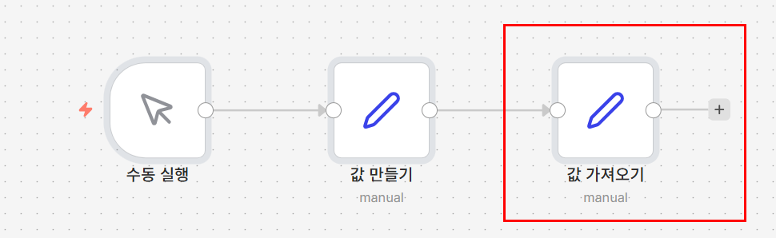
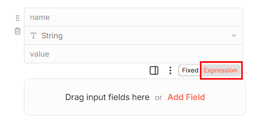
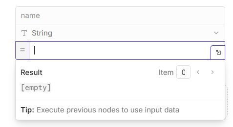
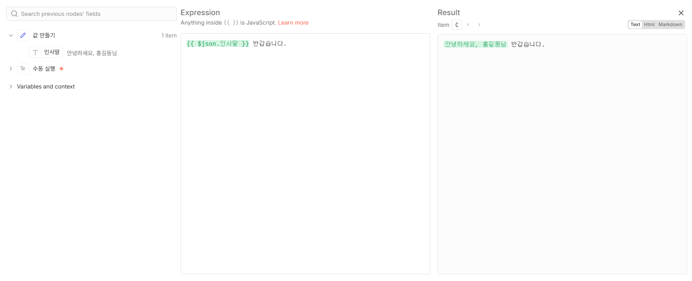

02 데이터 흐름과 표현식
앞 노드의 값을 가져다 씁니다
왜 이게 필요한가
같은 서식의 안내 메일을 여러 사람에게 보내본 적이 있을 겁니다. 본문은 똑같고 이름과 연락처만 바뀌는 그런 메일 말입니다. 하나를 써놓고 복사해서 이름만 고쳐가며 보내다 보면, 김철수 님께 갈 메일에 박영희라는 이름이 남아 있습니다. 사람이 손으로 옮기는 한 언젠가는 반드시 생기는 실수입니다.
이 실수는 실은 부주의 때문이 아닙니다. 값을 손으로 옮겨 적기 때문에 생깁니다. 손으로 옮기지 않고 앞 단계가 이미 알고 있는 값을 그대로 가져다 쓰면 어긋날 방법이 없습니다.
이번 시간에 배우는 이중 중괄호 {{ }}가 바로 그
"가져다 쓰기"입니다. 앞으로 이 강좌에서 하는 거의 모든 일이 이 문법 위에
얹힙니다 — 시트에 값을 채울 때도, 메일 본문에 이름을 넣을 때도, AI에게 민원
내용을 넘길 때도 전부 이것입니다.
이번 시간에 만들 것
이전 노드에서 만든 값을 다음 노드가 표현식으로 그대로 이어받아 쓰는 워크플로우를 만듭니다. 값을 두 번 입력하지 않고도 앞 단계의 결과를 재사용하는 법을 익힙니다.

지금까지의 흐름
이번 시간에 새로 만드는 노드
따라하기
- 01강 워크플로우 이어서 열기
01강에서 만든
수동 실행→값 만들기워크플로우를 그대로 엽니다. 화면을 이미 닫았거나 파일이 없다면 01강 하단에서 day1-01.json을 내려받아 불러오면 됩니다. - 새 노드 추가하기
값 만들기노드 오른쪽의+를 눌러Edit Fields (Set)를 고릅니다. - 필드 추가하기
노드를 열었을 때 이름과 값을 입력할 빈 줄이 보이지 않는다면, 필드 추가 버튼을 눌러 줄을 하나 만듭니다.
이미 빈 줄이 하나 보인다면 그 줄을 그대로 씁니다.
[그림 2-2] 필드를 입력할 빈 줄이 준비된 상태

- 필드 이름 정하기
새로 붙은 노드의 이름 칸에
최종문구를 입력합니다. - 표현식 모드로 전환하기
값 칸 오른쪽을 보면 작은 글씨로
Fixed/Expression이라고 적힌 전환 스위치가 있습니다(fx아이콘으로 보일 수도 있습니다). 이걸 눌러Expression쪽으로 바꿔야 다음 단계에서 입력하는 내용이 그냥 글자가 아니라 계산식으로 처리됩니다. 이 스위치를 누르지 않고 다음 단계 내용을 그대로 입력해도 n8n은 오류를 내지 않습니다. 그냥 화면에 글자가 그대로 나올 뿐입니다. 이 강의에서 가장 놓치기 쉬운 지점이니 값 칸 오른쪽을 잘 살펴보고 누르세요.[그림 2-3] 표현식 전환 스위치 위치
- 표현식 입력하기
표현식 모드로 바뀐 값 칸에
{{ $json.인사말 }} 반갑습니다.를 입력합니다.[그림 2-4] 표현식 입력 후 미리보기
- 노드 이름 바꾸기
노드 제목을 더블클릭해
값 가져오기로 바꿉니다.
{{ $json.인사말 }}은 무슨 뜻인가요
$json은 바로 앞 노드가 넘겨준 데이터 전체를 가리킵니다. 값 가져오기 앞에는
값 만들기 노드가 있고, 그 노드는 인사말이라는 이름의 값을 만들었습니다.
그래서 $json.인사말은 값 만들기가 만든 인사말 값,
즉 안녕하세요, 홍길동님을 그대로 가리킵니다. 앞 노드에서 정한 이름을
한 글자도 다르지 않게 그대로 써야 값을 찾을 수 있습니다.
실행하고 확인하기
아래쪽 Execute workflow를 누릅니다. 노드마다 초록 체크가 뜨고,
값 가져오기를 누르면 오른쪽에
최종문구: 안녕하세요, 홍길동님 반갑습니다.가 보이면 성공입니다.
안 될 때
값 칸에 {{ $json.인사말 }} 반갑습니다.가 글자 그대로 보입니다 —
표현식 전환 스위치를 누르지 않았을 때 나타나는 증상입니다. 값 칸이
Expression 모드로 바뀌어 있는지 다시 확인하세요.
필드 이름을 입력할 칸이 없습니다 — 아직 필드 줄이 만들어지지 않았습니다. 필드 추가 버튼을 눌러 빈 줄을 먼저 만드세요.
undefined 반갑습니다.가 나옵니다 — 앞 노드가 만든 필드 이름과 철자가 다릅니다.
값 만들기 노드의 필드 이름이 정확히 인사말인지 확인하세요.
값 만들기 노드와 연결되어 있지 않습니다 — 두 노드 사이에 선이 이어져 있는지 확인하세요. 끊어져 있으면 값 만들기 노드 오른쪽 동그라미를 끌어다 값 가져오기 왼쪽에 놓으면 연결됩니다.
이번 단계 워크플로우 받기
따라오다 막혔다면 이 파일을 받아 n8n에서 불러오면 이어서 진행할 수 있습니다.
워크플로우 내려받기 day1-02.json